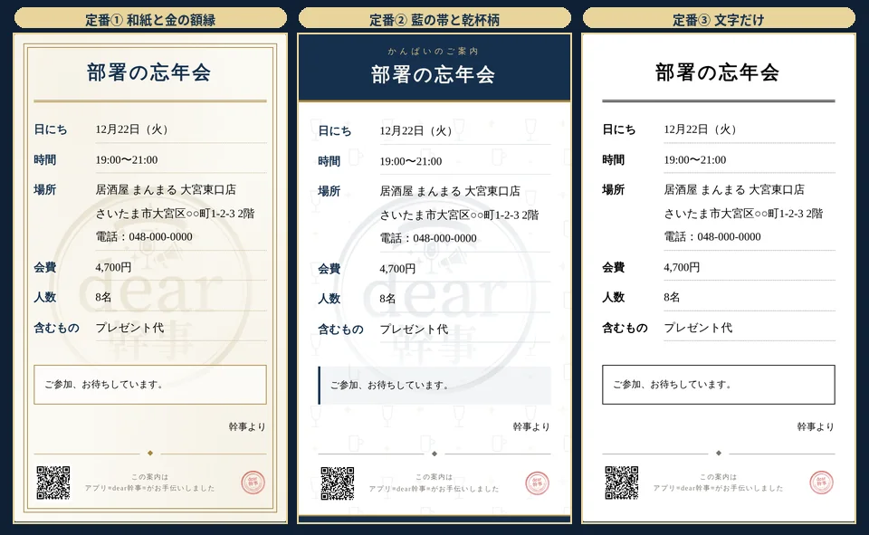
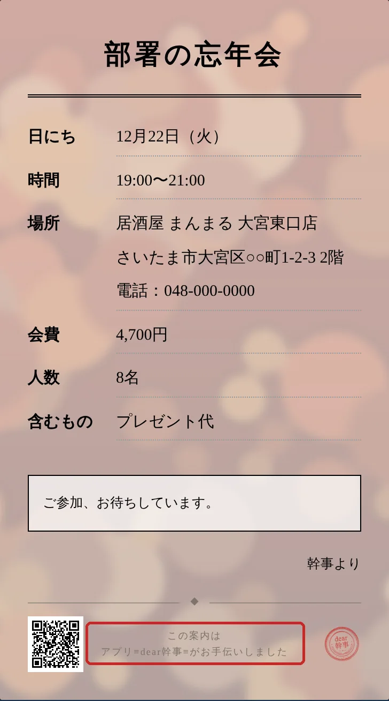
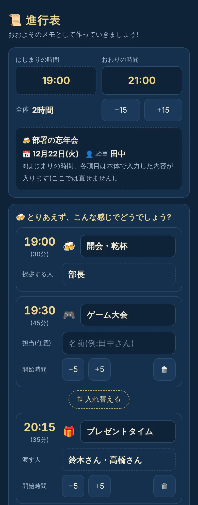
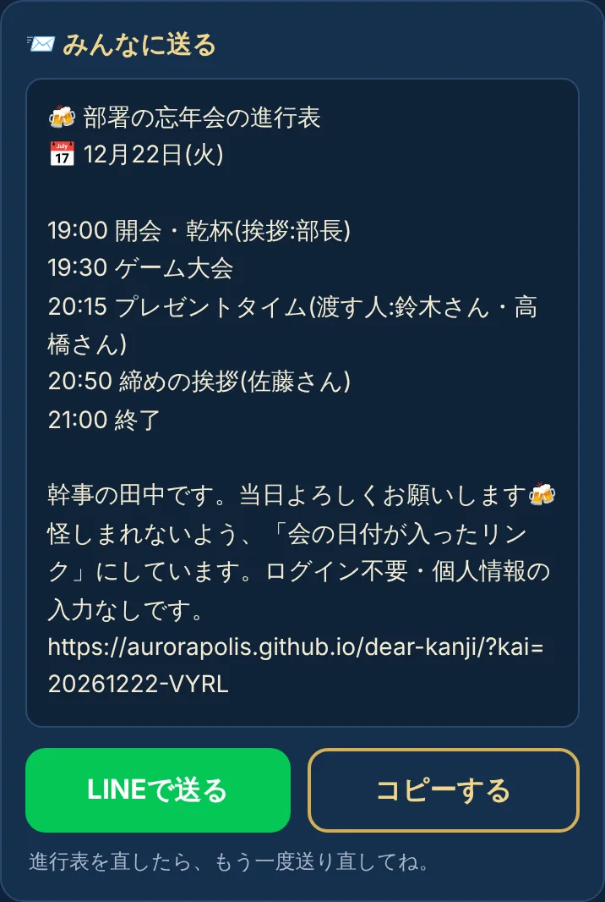
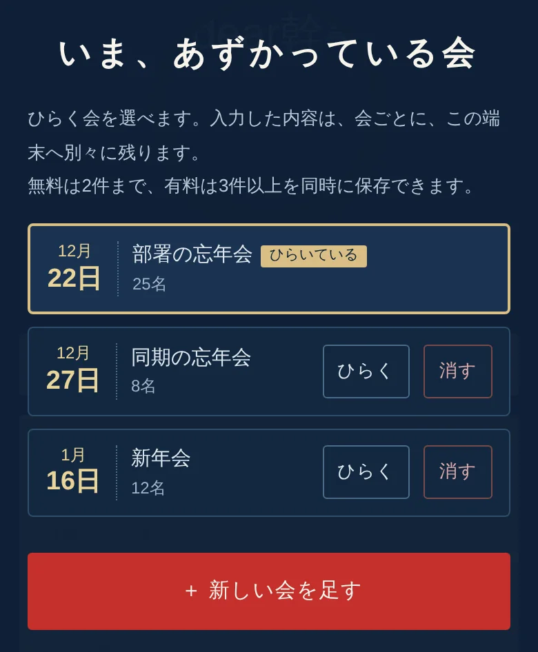
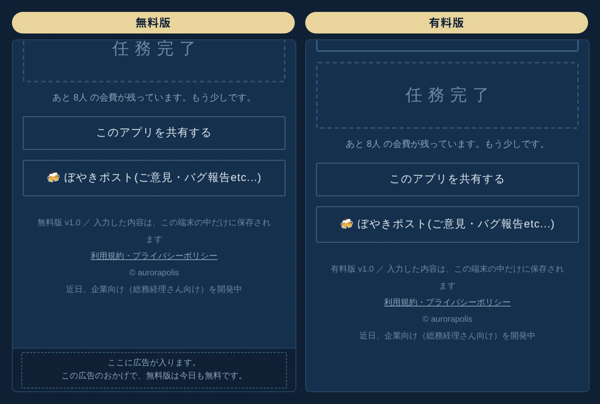

この扉には、鍵がかかっています
有料版(300円)でできること！【ただいま鍵屋が準備中】
①みんなへ配るチラシ背景を、好きな写真に変更できる
②ビンゴゲーム（無料でおためしできます）
③景品代の自動計算(電卓いらず)
④当日の進行表(当日慌てないように)
⑤会を3件以上、同時に保存(飲み会が重なったとき用)
⑥開発者が泣いて喜ぶ(次のアプリ開発費に充てるぜ)
おまけ：広告なし(画面の下がすっきり)


ありがとうございます…！（うれし泣き）
①みんなへ配るチラシ背景を、好きな写真に変更できる
②ビンゴゲーム（無料でおためしできます）
③景品代の自動計算(電卓いらず)
④当日の進行表(当日慌てないように)
⑤会を3件以上、同時に保存(飲み会が重なったとき用)
⑥開発者が泣いて喜ぶ(次のアプリ開発費に充てるぜ)
おまけ：広告なし(画面の下がすっきり)
①チラシ背景
定番3種類（無料）


無料は、定番の3種類がすべて使えます。有料は、お店の写真でも、みんなの集合写真でも、好きな写真をチラシの背景にできます。
※チラシのいちばん下の「アプリ dear幹事 がお手伝いしました」の見出しは、有料版でも消せません（上の写真の赤い枠のところです）。ここは、ぼくの名刺がわりです。
②ビンゴゲーム
忘年会の定番を、アプリひとつで。参加者のスマホにビンゴカードを送ることができます（LINE・QRコード・メールなど）。参加者が自分でタップして開けていきます。
幹事のスマホにはビンゴのガラガラを回す画面が出ます。そのお手伝いは、もんじゃ君がしてくれます！（たまに、キックで回します）
③景品代の自動計算
景品の値段を入れると、会費の計算につながります。電卓を探す幹事の姿は、もう見なくて済みます。
「みんなで出すもの」に景品を入れて🎯をつけると、その合計がひとりあたりの会費に入り、ビンゴの景品一覧にも、そのまま並びます。
④当日の進行表


始まりの時間を入れるだけで、タイムスケジュールの案が並びます。簡単な操作で内容を変更できます。
決まったら「LINEで送る」か「コピーする」ボタンで、自分にも、ほかの人にも送ることができます。
当日あわてないように「次、何だっけ？」を減らしましょう！
⑤会を3件以上、同時に保存

無料は2件まで。飲み会が重なる時期の幹事さんは、有料版へどうぞ。
⑥開発者が泣いて喜ぶ
300円は、次のアプリの開発費になります(aurorapolisではいろいろ進行中です)。画面の向こうで、開発者がひっそり泣いて喜びます。
おまけ：広告なし

画面のいちばん下に居座っている広告が消えます。スマホの下半分が、ぜんぶあなたのものに。